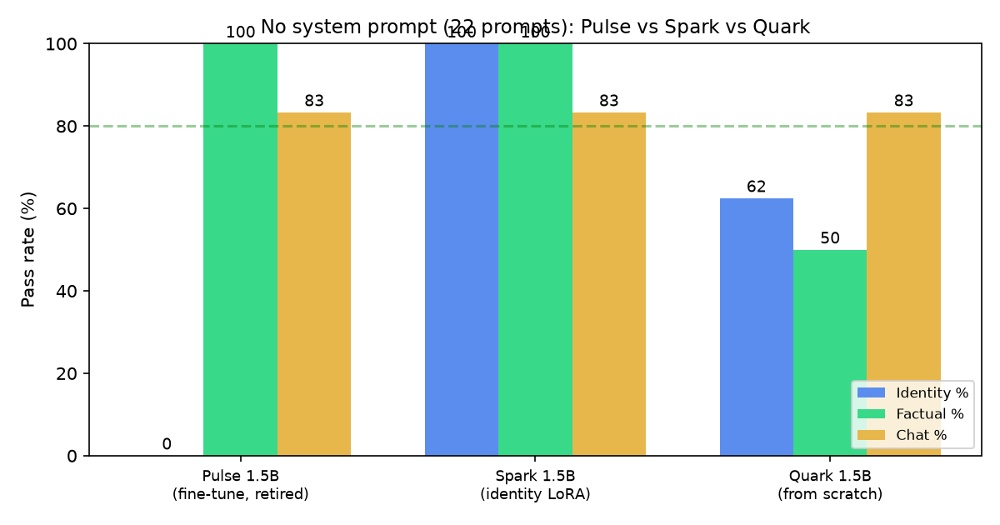

Quark: a 1.5B model built from nothing
Pulse and Spark are fine-tunes of a 1.5B Qwen — capable because they inherited Qwen's brain. Quark is the other kind of project: a custom tokenizer, a custom architecture, ~2B tokens of pretraining, and an instruction-tuned 1.5B model that runs entirely on our own code. This is what "from scratch" actually looks like, including the parts that don't work yet.
The family tree so far
Every Lattice model before this one was a fine-tune. The lesson of the Pulse vs Spark comparison was that identity can be baked into weights with a tiny LoRA. But the weights underneath were Qwen's — 1.5B parameters worth of knowledge, chat ability, and quirks, most of it learned from tens of trillions of tokens we never saw.
Quark abandons the shortcut. It is trained from random
initialization on a vocabulary we designed, using an architecture we
wrote (the same nanochat engine used for
Mini, scaled from 42M to 1.5B
parameters). No weights, tokenizer, or training code came from
anyone else.
The recipe
- Tokenizer: custom byte-pair vocabulary, built from scratch on our pretraining corpus — no tiktoken, no Qwen vocab.
- Architecture: 26-layer decoder-only transformer with RoPE and grouped-query attention, ~1.5B parameters.
- Pretraining: ~2B tokens of curated public text, trained on consumer hardware over multiple runs.
- Instruction tuning: a few hundred iterations on a small chat corpus to teach turn-taking, tone, and refusal.
- Identity: a handful of "you are Lattice Quark" samples in the SFT mix — the same trick that worked for Spark, at a fraction of the scale.
Two billion tokens is tiny — roughly 1/100,000 of what a frontier model sees. Everything that follows is a consequence of that number.
The results
We ran Quark through the same 22-prompt battery used for Pulse and Spark: identity, factual knowledge, and chat, greedy decoding, no system prompt.

Identity is partially in the weights. Asked "who are you?", Quark answers: "I'm Lattice Quark, built by Lattice Systems." It denies being ChatGPT and names Lattice Systems unprompted. But it slips on "who made you" ("a team of developers") and, when pressed about Alibaba, name-drops Google. With ~2B tokens and a handful of identity samples, the lesson lands most of the way.
Knowledge is the honest gap. Quark knows Paris, Tokyo, and that gold is Au — but calls Canberra "Sydney", credits Romeo and Juliet to Eugène Delacroix, and explains arithmetic methods without ever computing the answer. That's not a bug in training; that's 2B tokens. The fine-tunes inherited trillions; Quark earned every fact it has.
Chat behaviour, interestingly, is on par with the fine-tunes: 5/6 on the chat battery. Turn-taking, tone, and instruction following are cheap to learn; world knowledge is not.
What this means
- The pipeline is real. Mini proved a 42M model could be built from nothing; Quark proves the same pipeline reaches 1.5B without breaking.
- Data is the wall. At this scale, the architecture is not the bottleneck — token budget is. A 10× token budget would change these numbers more than any hyperparameter.
- Identity scales down, not just up. The Spark result (identity in the weights) survives even in a model with almost no knowledge to speak of.
The honest version
Quark is not a replacement for Spark on the chat page — not yet. It is the version of "we trained our own model" that we can actually stand behind, because every number above comes from weights we trained ourselves. The benchmark page has the full prompt-by-prompt results; the weights are open on Hugging Face.
Caveats
Benchmarks here are a home-grown battery of 22 prompts — directional, not a standard suite. All runs were single-seed, greedy decoding on the same hardware. Quark's factual failures may reflect what's in (or missing from) our pretraining corpus as much as its size. We report what we ran, not what we wished we'd run.